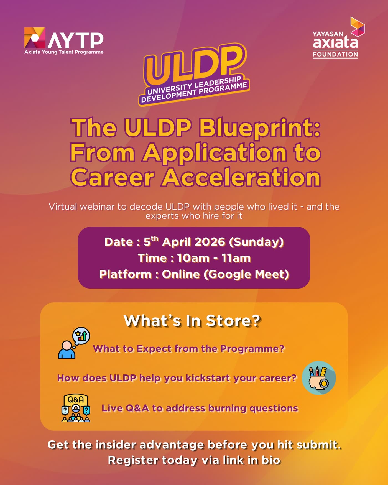

The Ecosystem
The Axiata Young Talent Programme runs a leadership pipeline that begins at age thirteen and continues to executive readiness. ELA is the continuity engine that keeps its alumni connected, growing and giving back — for life.

The Journey
Every stage feeds the next — and ELA is where all of them converge after graduation.
Ages 13–17 · Secondary
A five-year, fully funded residency at Kolej Yayasan Saad, Melaka. The grassroots foundation layer.
Undergraduate · 15+ Years Running
Malaysia's most promising undergraduates, sharpened through the AYTP leadership curriculum for over fifteen years.
Early Career · Digital
Digital-first leadership development for the technology frontier of ASEAN's corporate landscape.
Executive · 12+ Years Running
The accelerated path to C-suite readiness — enterprise strategy and CEO-grade accountability.
For Life · The Continuity Engine
Graduation is not an exit. Alumni from every track (plus the Axiata All-Star Bestari Scholars) converge into one permanent, compounding network.
Track Spotlight · SLDP
SLDP anchors a fully funded, five-year residential leadership incubator in exclusive partnership with Kolej Yayasan Saad (KYS), Melaka — transforming top secondary school students into the premier foundation layer of our ASEAN network.
Academic screening straight after the primary school cycle — top-tier marks plus an outstanding extracurricular leadership portfolio.
Rigorous central aptitude testing measuring analytical, verbal and logical problem-solving baselines.
An intense, multi-day residential camp at KYS: team challenges, presentation sprints and behavioural interviews that isolate raw leadership character.
The Pipeline Continues
University Leadership Development Programme
The undergraduate heart of the AYTP pipeline — over fifteen years of structured leadership modules, industry exposure and mentorship carrying high-potential university talent toward professional readiness.
15+ Years of LegacyAxiata Digital Leaders Programme
Developing digital-first leaders — pairing technology fluency with enterprise judgment for ASEAN's most demanding digital arenas.
Digital LeadershipYoung CEO Development Programme
Twelve-plus years of grooming young executives for the accelerated path to the C-suite — enterprise strategy, decision-making under pressure and CEO-grade accountability.
12+ Years of LegacyWhere ELA Comes In
Graduation from a track is not an exit — it is an entry point. ELA converts programme alumni into a permanent, compounding leadership network.
Explore the initiatives that keep this ecosystem moving — or meet the committee that runs it.